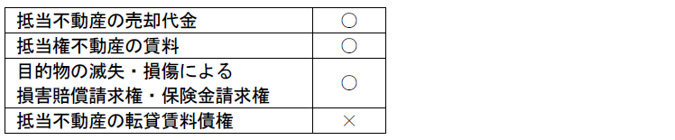

第３編 担保物権
第２章 抵当権
第３節 抵当権の効力
Ⅱ 物上代位（372条、304条）
物上代位とは、担保物権を有する者は、目的物の売却・賃貸・滅失・損傷等により債務者が受けるべき金銭その他の物に対しても権利を行使することができることをいう。
抵当権も交換価値を支配する担保物権であるから、目的物に代わる価値（代償物・代位物）の上にも同一性を認められる限りで効力が及ぶものとされ、先取特権の物上代位の規定（304条）が準用される（372条）。

1. 売却代金に対する物上代位
売却代金は交換価値が具体化したものといえる。
2. 賃料に対する物上代位
① 賃料は目的物の交換価値のなし崩し的な具体化である。
② 民事執行法には収益執行と物上代位との調整規定が置かれており（民執法93条の４、188条）、現行の民法・民事執行法は、賃料への物上代位を容認している。
3. 目的物の滅失・損傷による損害賠償請求権及び保険金請求権に対する物上代位
(1) 損害賠償請求権
第三者が目的物を滅失・損傷した場合に、所有者が取得する不法行為に基づく損害賠償請求権について、抵当権者は物上代位をすることができる（大判大５.６.２、大判大６.１.22）。
(2) 保険金請求権
保険金も目的物の価値に代わるものであると考えるのが当事者の意思に合致する。
4. 転貸賃料債権に対する物上代位
Ｑ 転貸賃料債権に抵当権者は物上代位することができるか。所有者と同様に抵当不動産の賃借人（転借人）も372条で準用する304条１項の「債務者」に含まれるかが問題となる。
Ａ 否定説（最決平12.４.14）
（理由）
① 賃借人は、所有者のように債務の履行に関して抵当不動産でもって責任を負う地位にはない。
② 転貸賃料債権の基礎となる賃借権自体は賃借人の権利であり、これに抵当権の効力が及ぶことはない。
Ｂ 肯定説
（理由）
転貸賃料は目的物の価値代替物である。
5. 買戻権行使により生じる買戻代金に対する物上代位
Ｑ 買戻特約付不動産の買主が抵当権を設定した場合、売主の買戻権行使により生じる買戻代金債権に抵当権者は物上代位することができるか。
→ 肯定説（最判平11.11.30・多数説）
（理由）
① 買戻権行使によっても、それまでに抵当権が有効に存在していたことにより生じた法的効果が覆滅されるものではない。
② 買戻代金は、実質的には目的不動産の所有権復帰についての対価であることから、目的不動産の価値変形物といえる。
③ 物上代位権を認めないと、先順位抵当権者の犠牲において、後順位抵当権者や一般債権者が望外の利益を得ることになり妥当でない。
1. 「払渡し又は引渡しの前」に差押えをすること
Ｑ 物上代位権を行使するためには「払渡し又は引渡しの前」に差押えをする必要がある（372条、304条１項ただし書）。差押えが要求される理由については物上代位制度の趣旨と関連して争いがある。
Ａ 優先権保全説
物上代位は、抵当権者保護のために認められた特権的効力である（特権説）。差押えは抵当権者が物上代位という特別の保護を受けるための要件であり、代位物に抵当権の効力が及んでいることを公示する機能を有する。
Ｂ 特定性維持説
抵当権の効力が目的物の価値代表物である代位物に及ぶのは、抵当権の価値権たる本質上当然である（価値権説）。差押えは、代位物、特に金銭が目的物の所有者に支払われて、その一般財産に混入して特定性を失うことを防止する為に要求される。
Ｃ 第三債務者保護説（最判平10.１.30）
物上代位制度の本質は特権説と価値権説の両者を含む。差押えは、抵当権者に対して代位目的物の支払義務を負う第三債務者の二重弁済の危険を防止するために要求される。
2. 「差押え」は、抵当権者自らが行う必要があるか。
Ａ 自ら差し押える必要がある。
（理由）
① 物上代位権は特権であるから、抵当権者自ら行使しなければならない（優先権保全説より）。
② 二重弁済の危険を防止するためには、抵当権者が自ら差し押えて第三債務者に誰に弁済すべきかを公示する必要がある（第三債務者保護説より）。
Ｂ 自ら差し押える必要はない。
（理由）
他の債権者による差押えでも特定性は維持される（特定性維持説より）。
3. 「払渡し又は引渡し」に債権譲渡が含まれるか。
Ａ 肯定説
（理由）
債権が譲渡されれば、目的物はもはや債務者に属しないのであるから、差し押えても無効である。
Ｂ 否定説（最判平10.１.30）
（理由）
① 債権が譲渡されても、特定性は維持されている（特定性維持説より）。
② 第三債務者を二重弁済の危険から保護するという304条１項の趣旨目的から（第三債務者保護説より）。
4. その他
(1) 転付命令の効力は、第三債務者に送達されたときに生じるので、抵当建物の売買代金債権につき他の債権者が転付命令を得て、それが第三債務者に送達された後に、抵当権者が物上代位権を行使して同債権を差し押さえても、抵当権者は優先弁済を受けることができない（最判平14.３.12）。
(2) 抵当権に基づき物上代位権を行使する債権者は、他の債権者による債権差押事件に配当要求をすることによって優先弁済を受けることはできない（最判平13.10.25）。
Ⅲ 優先弁済的効力
抵当権の本体的効力は、債権の弁済を受け得ない場合に抵当不動産から優先弁済を受けることにある。抵当権者は、目的不動産を強制的に競売に付し、その売却代金から被担保債権につき優先的に弁済を受けることができる。
1. 抵当権実行の要件
(1) 抵当権の存在
抵当権が存しなければ抵当権を実行することができない。
(2) 被担保債権の弁済期の到来
2. 競売手続
(1) 競売の開始
上記の要件を具備すれば、抵当権者は競売の申立てをすることができる（民執法２条）。
(a) 競売申立て
目的物の所在地を管轄する地方裁判所（執行裁判所）への申立てが必要である（民執法188条、44条）。
(b) 競売開始決定（差押えの効力の発生）
執行裁判所は、競売開始決定において、目的不動産を債権者のために差し押える旨を宣言し、競売開始決定を債務者又は所有者に対して送達する（民執法188条、45条１項・２項）。
執行開始決定により、裁判所書記官は目的不動産につき直ちに差押えの登記を登記所に嘱託する必要がある（同法188条、48条）。
差押えの効力が生ずるのは競売開始決定の送達又は差押えの登記のいずれか早い時である（同法188条、46条１項）。
(2) 換価手続
(a) 買受人
抵当不動産の第三取得者は買受人となることができるが（390条）、債務者にはこれが禁止されている（民執法188条、68条）
(b) 不動産取得の時期
買受人は、代金納付の時点で不動産を取得する（民執法188条、79条）。
抵当権者は被担保債権の債権者として、債務者の一般財産に対して強制執行することも可能である。しかし、抵当権者が債務者の一般財産に執行することは他の一般債権者を著しく害することになることから、制限が設けられている。
1. 抵当目的物からの弁済で不足する場合（394条１項）
抵当権者は、抵当不動産を実行し、その代価で全額の弁済を受けない部分についてのみ、債務者の一般財産に対して強制執行することができる（394条１項）。
抵当権者が抵当権を実行しないで先に一般財産に強制執行した場合、一般債権者はこれに対して異議の申立てをすることができるが、債務者はこれをすることができない（大判大15.10.26）。
2. 抵当権実行前に一般債権者が一般財産に強制執行した場合（394条２項）
この場合には394条１項は適用されず、抵当権者は債権全額につき一般財産から配当を受けることができる（394条２項前段）。この場合において、他の一般債権者は、抵当権者に394条１項の規定による弁済を受けさせるため、抵当権者に配当すべき金額の供託を請求することができる（394条２項後段）。
Ⅳ 用益権との関係
1. 抵当建物使用者の引渡しの猶予
抵当建物の賃貸借の競売による消滅に伴い、建物明渡しを強いられる賃借人を保護するため、６か月の引渡しの猶予期間を与えた（395条１項）。
(1) 猶予期間
買受けの時（代金納付の日）から６か月
(2) 対象目的物、対象者
対象は建物のみであり、土地には適用がない。
対象者は、①競売手続の開始前から使用又は収益する者（同条項１号）・②強制管理又は担保不動産収益執行の管理人が競売手続開始後にした賃貸借により使用又は収益する者（同条項２号）に限られる。
さらなる執行妨害の口実を与えることがないようにするためである。
(3) 建物の使用対価
６か月は明渡猶予期間であって、賃貸借期間ではないので、賃料は発生しないが、不当利得返還請求権は発生する。
2. 抵当権者の同意を登記した賃貸借の対抗力
抵当権の登記後に登記された賃借権について、これに優先するすべての抵当権者が同意し、かつその同意について登記があるときは、その同意をした抵当権者に対抗できる（387条）。
(1) 抵当権者の同意
賃借権の登記前に登記されているすべての抵当権者の同意が必要である。
(2) 対象
土地・建物どちらにも適用がある。